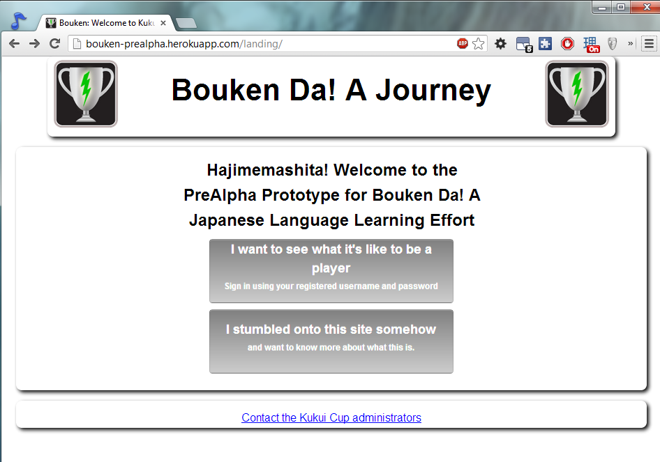

$ cd your_repo_root/repo_name
$ git fetch origin
$ git checkout <branch name>
If you're using the GitHub for Mac, simply sync your repository and you'll see the new branch.
What is the Bouken Da!?
Bouken Da! is an attempt at integrating social aspects and Serious Game Design elements into learning the Japanes Language.

Why Bouken Da!?
Japanese Language Learning isn't easy. In many ways using books and studying with repetition can only provide so much in terms of learning, and with language learning it often goes beyond what one can see in books or non-interactive learning material. Bouken Da! attempts to find a balance by applying more interactive elements as well as social elements to enhance learning and motivate users to do more to grasp the language.
Why Hawaii?
This project was developed as part of a class for the University of Hawaii and being situated in Hawaii has a deep connection to the roots of Japanese culture. Hawaii has many connections to Japan (both historically and culturally) and celebrates many of the same cultural events as Japan does. With such a unique landscape, it is a good opportunity to explore the possibilities.
How it works
!That's Currently in Development.! Right now Bouken Da! works using the Makahiki infrastructure (which you can learn about here) and is designed with Django and Python to serve as an interconnected serious game system where participants can learn in a variety of ways.
Want to Know More?
Bouken Da! is still a work in progress and not yet implemented in and functional system. But while it is still in the very early stages of development, design concepts and aspects were created and prepared to match the system as it began implementation. Details for that can be found as follows:
- Project Wiki - See an overview of the project.
- Installation - While still in development Bouken Da! is still capable of being installed to enjoy the Makahiki infrastructure and see what we are working with.
- User Guide - Currently under construction will include how users can modify the system to set up their own Bouken Da! competition
- GamePlay - Learn how the game mechanics work and what is available to work with.
- GameContent - See samples of the content that could be used in Bouken Da! or the formatting you could use to develop your own system for it.
- GameInterface - While still in development see what we have planned for the system to look like in the future!
- GameEvaluation - See our plans for testing and refining our game system, as well as data and analysis once the tests are carried out
For more information For more information, please go to The Creators Blog Here, to learn about the concept.